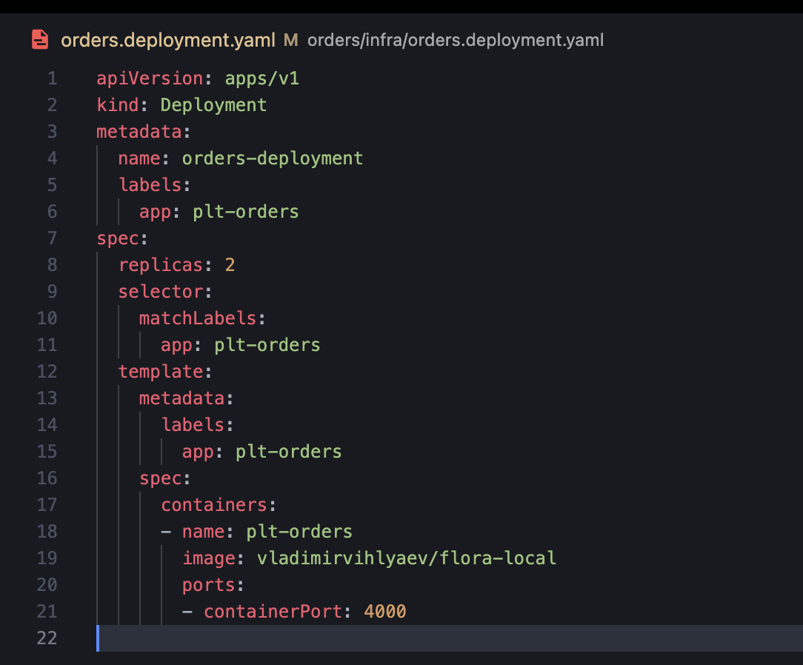
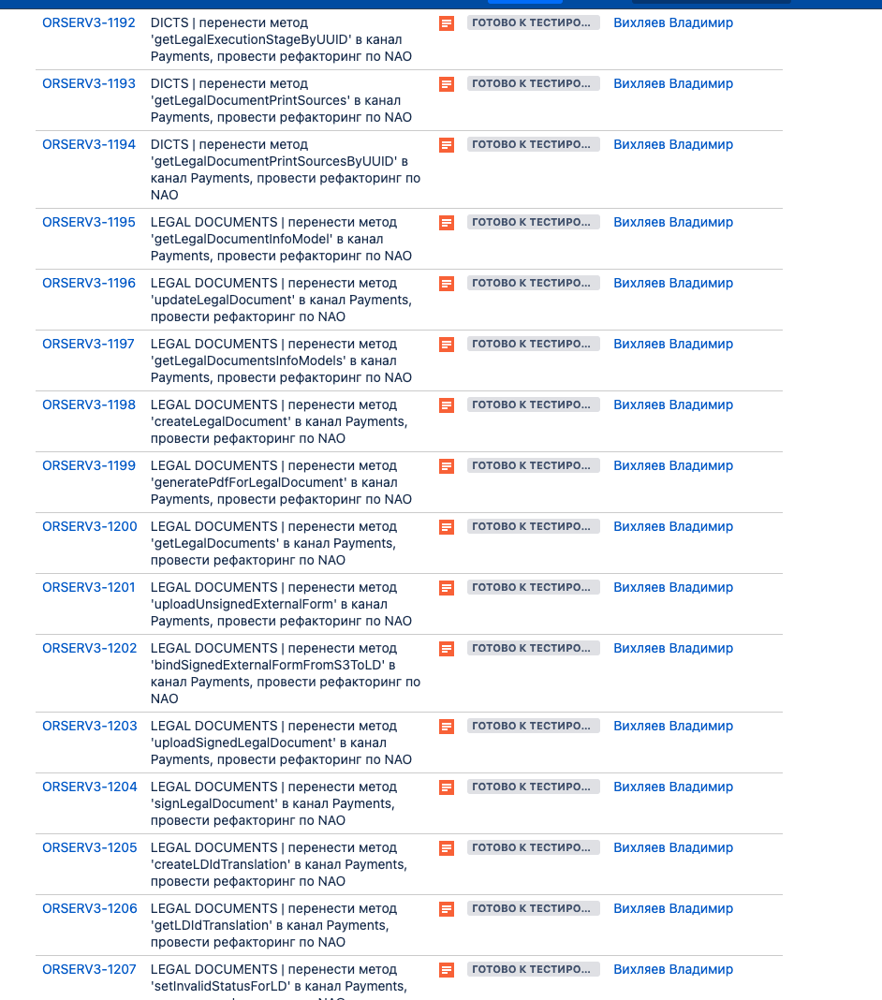
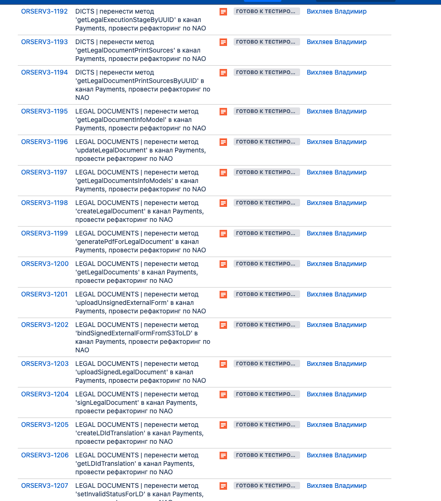
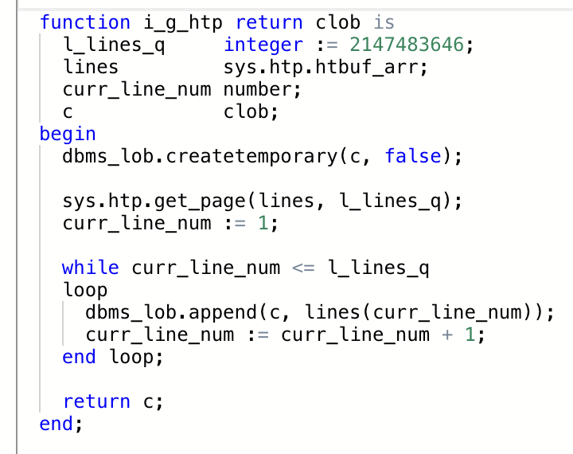
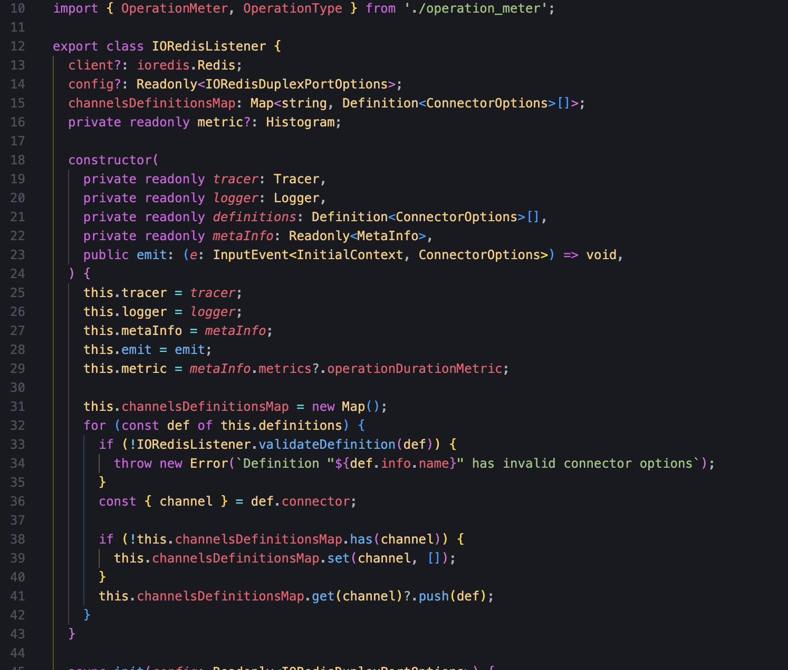

$ git log --oneline releasev0.57.0..
$ git log --oneline releasev0.57.0..HEAD
$ git rebase -i 6b70a2b^
$ git log --oneline releasev0.57.0..
$ git push -f origin


$ git log --oneline releasev0.57.3..HEAD
$ git log --oneline releasev0.57.3..feat/FLORA-20365
$ git log --oneline releasev0.57.3..feat/FLORA-20472 \
-- ./definitions/def_updateOrder
$ git log --oneline releasev0.57.3...feat/FLORA-20472
$ git log --oneline origin/feat/FLORA-20472...origin/releasev0.57.3



 




